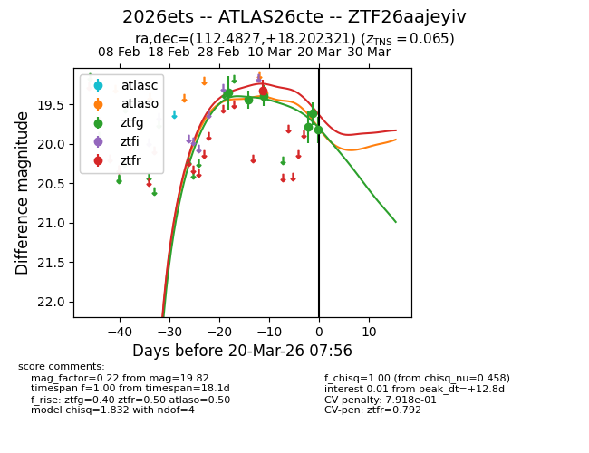
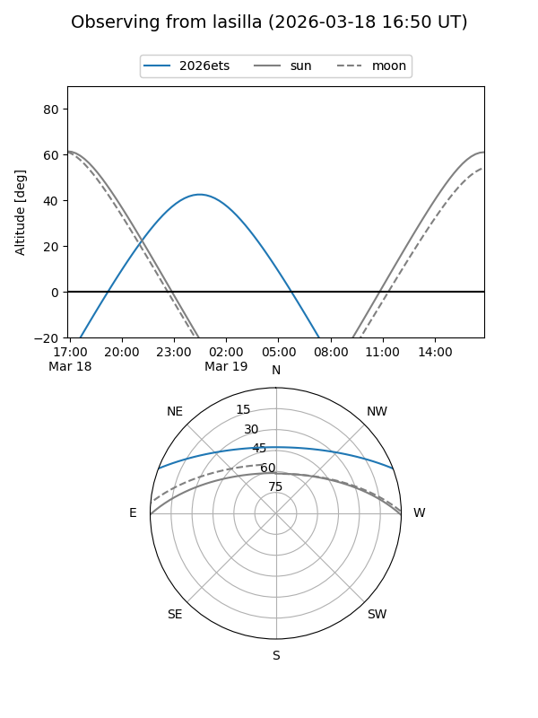
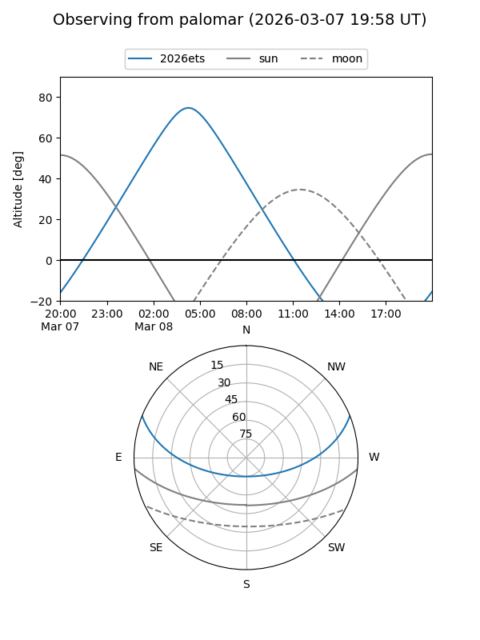
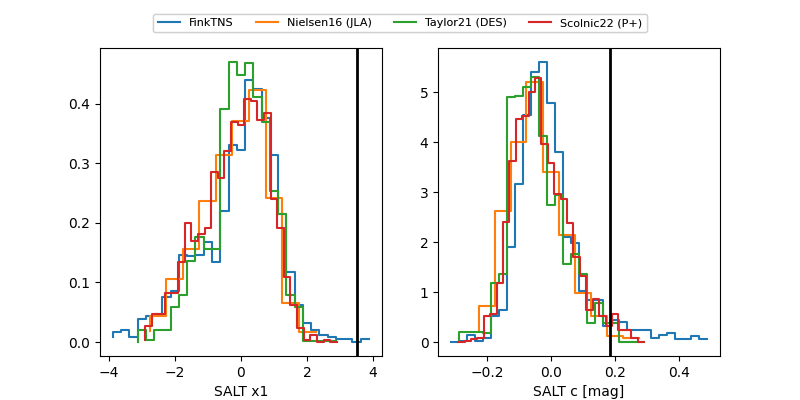

2026ets
Target 2026ets at 2026-03-20 07:58
Aliases and brokers:
FINK: link
Lasair: link
ALeRCE: link
TNS: link
YSE: link
alt names
ZTF26aajeyiv (ztf,fink_ztf)
2026ets (tns,yse)
ATLAS26cte (atlas)
Coordinates:
equatorial (ra, dec) = 112.4827,+18.20232
equatorial (HMS+DMS) = 07:29:55.84,+18:12:08.36
galactic (l, b) = (200.5510,+16.48533)
Flags:
likely cv
Photometry:
last atlaso=19.36, ztfg=19.82, ztfr=19.32
1 atlaso, 6 ztfg, 1 ztfr detections
Lightcurve

Visibility


Additional plots
